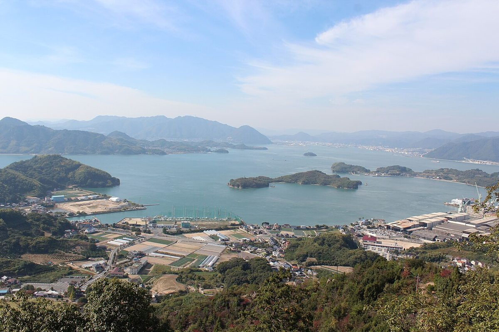
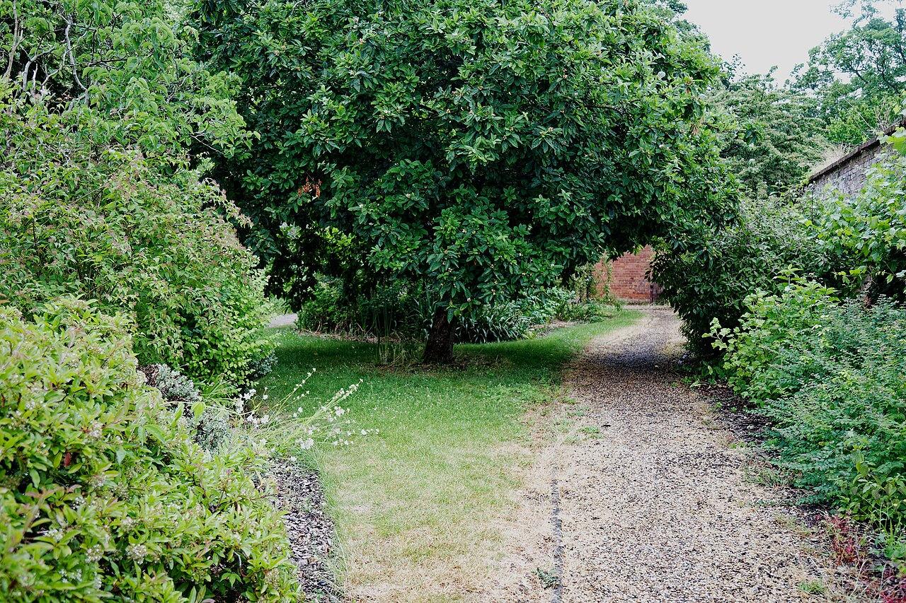
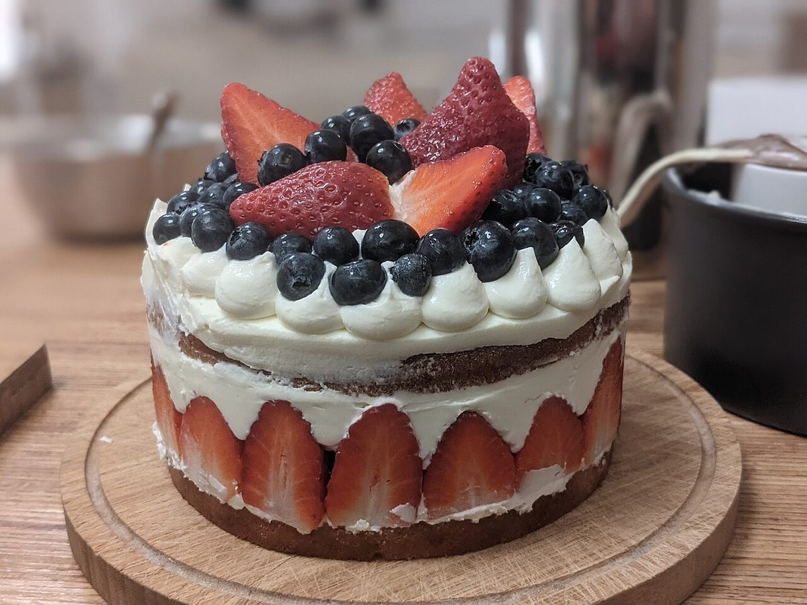
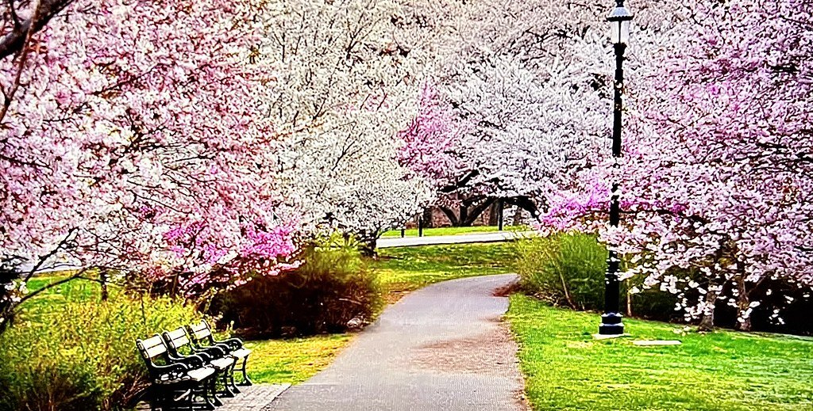
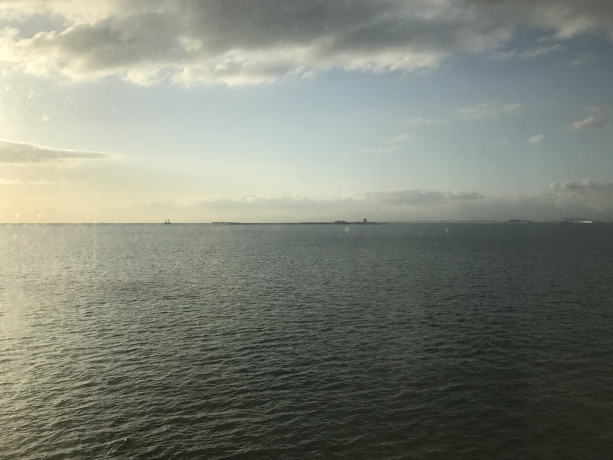

MENU
みはらバーガーと、手づくりのお菓子

バスクチーズケーキ
本店でも人気のスイーツ。テイクアウトにも。

カヌレ・焼き菓子
季節ごとに数種類を用意すると紹介されています。

みはらバーガー
三原の食材を使った名物。写真はケーキのイメージ画像です。
ドリンク(はちみつラテ、抹茶ラテなど)もあると紹介されています。営業時間・定休日・価格・詳しいメニュー準備中。最新の情報はInstagramでご確認ください。

広島県三原市須波 ・ 古民家カフェ＆宿「むすび」の別邸
人と、料理と、空間をむすぶ。
古民家の隣の別邸で、瀬戸内のひかりと甘いひとときを。
ABOUT
2023年4月、三原市須波の古民家カフェ＆宿「むすび」の隣に開いたカフェです。本店のバスクチーズケーキなどが売り切れたり、満席で入れなかったりする声に応え、ケーキ工房を兼ねて、予約なしでも味わえ、持ち帰りもできる場所としてつくられました。
店名の「bettei」は「別邸」。本店とは違う、落ち着きの中にモダンさのある空間と伝えられています。

※店名の意味や由来は、公開されている紹介記事をもとにしています。お店の公式な説明ではありません。
MENU
本店でも人気のスイーツ。テイクアウトにも。
季節ごとに数種類を用意すると紹介されています。
三原の食材を使った名物。写真はケーキのイメージ画像です。
ドリンク(はちみつラテ、抹茶ラテなど)もあると紹介されています。営業時間・定休日・価格・詳しいメニュー準備中。最新の情報はInstagramでご確認ください。
IMAGE







掲載の写真はフリー素材のイメージで、店舗の実際の様子ではありません。
VOICE
テラス席から海を眺めながら、ゆっくりケーキをいただきました。時間の流れがやさしい場所です。
創作の例文
予約なしで入れて、持ち帰りもできるのがうれしい。家族へのお土産にしたくなります。
創作の例文
地元の食材を使ったバーガーが印象的でした。駅から歩いて行ける距離なのも助かります。
創作の例文
※上記は制作者が作成したイメージ例であり、実際のお客様の声ではありません。
CREDIT